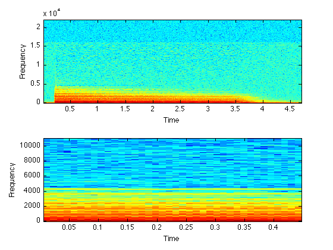

M4A (AAC) Compressed Audio File Reading
The function m4aread serves as a drop-in replacement for wavread to read audio files that are encoded in AAC (also known as MPEG4 Audio, or m4a files). The Matlab wrapper actually hands off the work to faad, the open-source AAC decoder. Binaries for faad are widely available (and may be included in this distribution). By virtue of the support provided within faad, m4aread can also read mp4 video files directly and return the soundtrack.
So far as possible, m4aread accepts the same options as wavread e.g. to read only a subset of samples etc. See "help m4aread".
m4aread is based on my Matlab code for reading mp3 files, mp3read.
m4aread pays particular attention to the handling of very large audio files; it is possible to load a small part of a file that, if read in its entirety, would not fit into memory. You can also downsample as part of reading, and the peak memory requirement is dictated by the post-downsampling segment, not its size prior to downsampling.
Contents
Example usage
Here, we read in an AAC file, plot is spectrogram, then write it out in WAV format. We then show how we can read just a portion of the file, force it to be mono, and downsample on reading.
% Read an audio waveform [d,sr] = m4aread('piano.m4a'); % Plot the spectrogram subplot(211) specgram(d(:,1),1024,sr); % Save as a wav file wavwrite(d,sr,'piano.wav'); % What is the original size and sampling rate? size(d) sr % Read with downsampling, sample range restriction, and forced % single channel firstsamp = 10001; lastsamp = 20000; forcemono = 1; downsamp = 2; % 2:1 downsampling [d,sr] = m4aread('piano.m4a',[firstsamp lastsamp],forcemono,downsamp); size(d) sr % What did that give us? subplot(212) specgram(d,512,sr);
ans =
207407 2
sr =
44100
ans =
10000 1
sr =
22050
 External binaries
The m file relies on an external binary, faad, which is available for Linux, Mac OS X, or Windows. See http://www.audiocoding.com/
Installation
You can download a zip file containing m4aread.m, the other files used in this demo, and faad binaries for several platforms, from m4aread.zip.
m4aread will look for its binary, faad, in the same directory where it is installed. Binaries for different architectures are distinguished by their extension, which is the standard Matlab computer code e.g. ".maci64" for MacOS 10.6 and ".glnxa64" for 64-bit Linux. The exception is Windows, where the binaries have the extension ".exe".
Temporary files will be written to (a) a directory taken from the environment variable TMPDIR (b) /tmp if it exists, or (c) the current directory. This can easily be changed by editing the m file.
% Last updated: $Date: 2011/09/09 15:50:01 $ % Dan Ellis <dpwe@ee.columbia.edu>